这三组实验回答了什么？
网格更细，神经算子并不会自动更准确。通量误差在细网格上逐渐到达平台；曲率预测中的小偏置换回物理单位后会被放大。扩大邻域能降低误差，但这次3×3、5×5和7×7的纯神经模型都没有解决这一收敛问题。
在同一套参数匹配的新模型中，通量通常以5×5更合算，继续扩大到7×7并不总是更好。曲率则明显受益于7×7。然而，所有新曲率组的聚合物理误差仍高于成熟原模型和传统高度函数。
这次增强数据增加了弱曲率、近轴向和平面附近样本。它让通量在两个测试集、五档网格、三种邻域的全部30个组合中都变差，而且每个组合的三个种子方向一致。曲率的收益依赖邻域：7×7部分改善，5×5反而退步，3×3不稳定。
网格加密后，误差去了哪里？
对同一物理几何，网格从N32加密到N512。曲率同时比较无量纲输出q和物理曲率κ=q/h；通量同时保留比例误差与面平均通量密度，避免把单位换算带来的h或h²缩小误认为精度收敛。
原模型对平面的q误差约为0.000387，且在这组加密序列中保持不变。因此，平面的物理曲率误差随1/h放大。扩大邻域减小了新模型的误差，但细网格上的趋势仍然向上。
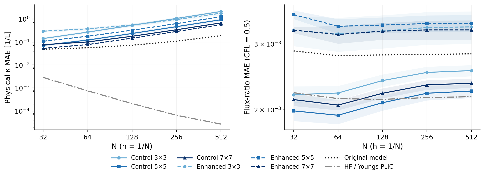

固定物理多项式几何上的结果
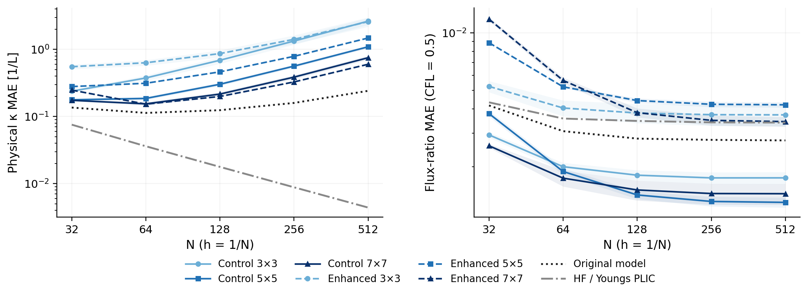

相同推理预算下，能换来多少精度？
在独立几何、N128上，对照数据的通量模型从3×3扩大到5×5，面平均通量密度MAE从0.001209降到0.000912，降低24.5%；批量4096次局部预测的完整调用中位延迟从269.5增到283.9微秒。
曲率从3×3扩大到7×7，物理MAE从0.529降到0.177，降低66.6%；对应延迟约185.6和186.5微秒。时延波动区间有明显重叠，几个百分点的差异不足以证明稳定加速。
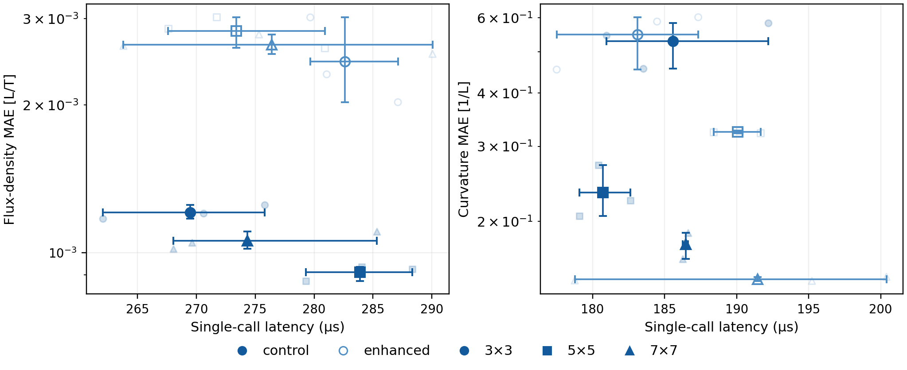

把精度设成目标，再看时间
在上述固定测试条件下，若通量密度误差目标为0.001，六组新候选中最快达标的是对照数据5×5，约283.9微秒。若物理曲率误差目标为0.2，最快达标的是对照数据7×7，约186.5微秒。同一个曲率目标到了N512，六组新候选均未达到。
单独查看传统数值算子的CPU参考
Youngs PLIC、体积分数梯度曲率和高度函数另外使用CPU NumPy双精度实现计时，固定一个逻辑核心。它们与精度测试采用相同定义和有效样本；设备、精度和实现层次单独报告。本次没有据此宣称相对优化生产数值实现的同设备加速。
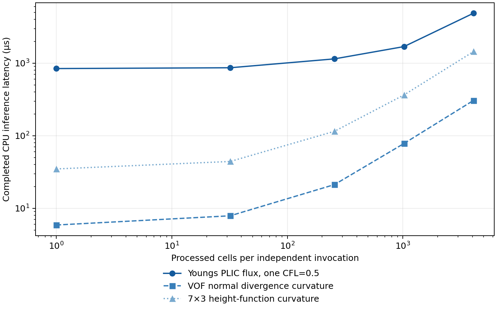
数据改了什么，邻域又贡献了什么？
每种数据策略都使用相同底层几何，真正积分7×7单元，再取中心5×5和3×3。样本数、训练更新数、三个配对种子、精度和验证频率保持一致，参数数目匹配在0.41%以内。每组权重只由独立验证集选择。
下表固定最终12000步、独立圆／椭圆／弱正弦几何、N128和共同有效样本。误差的±是三个种子之间的样本标准差；时间先取各模型重复调用的中位数，再报告三种子均值±标准差。
| 数据与邻域 | 通量密度MAE ×10⁻³ | 通量延迟 [µs] | 物理曲率MAE | 曲率延迟 [µs] |
|---|---|---|---|---|
| 对照数据 · 3×3 | 1.209 ± 0.039 | 269.5 ± 6.9 | 0.529 ± 0.065 | 185.6 ± 5.9 |
| 对照数据 · 5×5 | 0.912 ± 0.032 | 283.9 ± 4.5 | 0.234 ± 0.034 | 180.7 ± 1.8 |
| 对照数据 · 7×7 | 1.057 ± 0.045 | 274.3 ± 9.6 | 0.177 ± 0.012 | 186.5 ± 0.2 |
| 增强数据 · 3×3 | 2.452 ± 0.511 | 282.6 ± 4.0 | 0.548 ± 0.082 | 183.1 ± 5.1 |
| 增强数据 · 5×5 | 2.834 ± 0.205 | 273.4 ± 6.8 | 0.324 ± 0.002 | 190.1 ± 1.6 |
| 增强数据 · 7×7 | 2.657 ± 0.123 | 276.4 ± 13.2 | 0.146 ± 0.002 | 191.5 ± 11.3 |
通量密度误差列以10⁻³ L/T表示，曲率单位为1/L。时间单位为微秒，每次调用4096个邻域。
扩大邻域对新曲率模型有明确帮助，但这与超过成熟参考是两件事。在同一N128独立测试中，成熟原模型的曲率MAE约0.0722，传统高度函数约0.000211；新对照数据7×7约0.1768，增强数据7×7约0.1463。
增强数据的效果也依赖算子：N128和N512的7×7曲率在两类测试中都得到三个种子一致的改善；5×5则一致退步。通量在全部30个组合里三个种子都变差。通量与曲率需要分别设计数据分布。
为什么保留1500步先导阶段？
最初每组统一训练1500步，但24/36组在最后一步选中最佳权重，最后500步的验证MSE改善中位数仍为26.7%。据此，全部组统一继续到12000步，使用相同继续训练日程，并保留原阶段。最终阶段最后2000步的验证改善中位数约2.5%。
最终判断采用12000步结果。预算对照同时包含额外更新与统一cosine日程，不能单独归因于更新次数；本次也不把统一预算的结果称为纯神经方法的精度上限。
完整表格，按问题查
全部聚合表都在这里，默认显示最终阶段。可切换测试集、网格、分层和误差指标；逐种子及逐Courant数的完整数据另附CSV下载。
精度与收敛
| 方法 | MAE | 训练种子 | 共同样本数 | 支持覆盖率 |
|---|
覆盖率以各几何测试集的原始采样总数为分母，保留跨网格门控与传统高度函数有效范围的共同交集。±不是几何总体置信区间。打开全部静态精度表
单步推理时间
| 模型 | 调用中位数均值 ± 种子标准差 [µs] | 各种子P5–P95端点均值 [µs] | 摊每邻域 [µs] |
|---|
这里每个单元格保留相同设备、同一计时边界。摊每邻域时间反映批量吞吐，不等于单独调用一个邻域的延迟。
全部图片与矢量图
点击图片查看原尺寸，图下可下载PNG和PDF。主报告采用最终阶段；先导图保留在图册中，名称单独标明。
展开完整图册（11张）
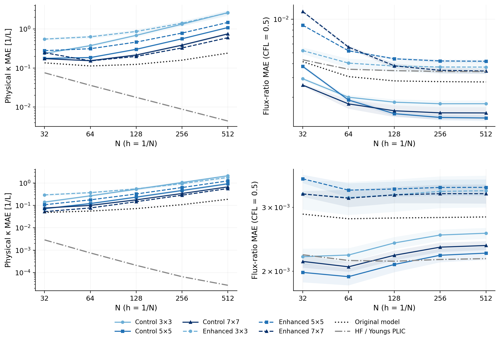

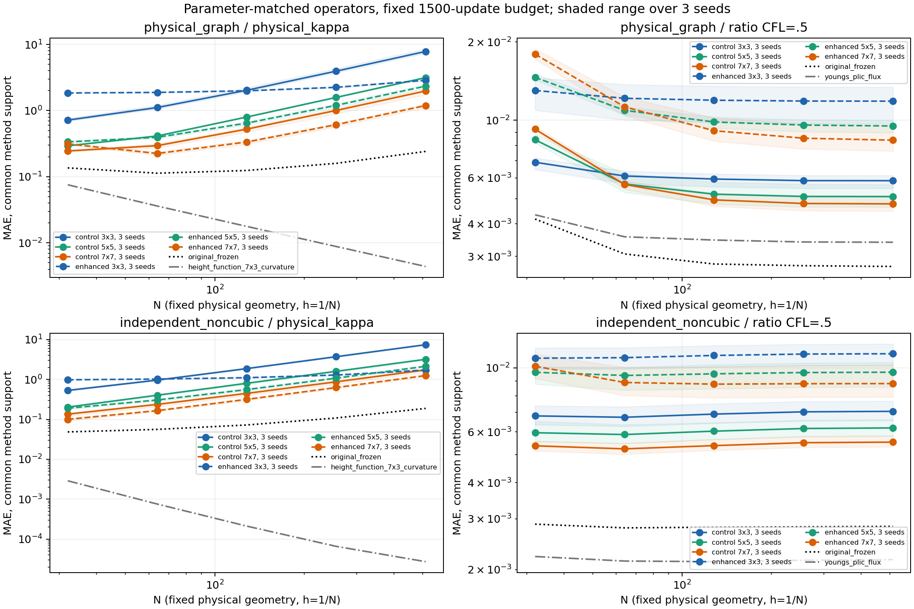

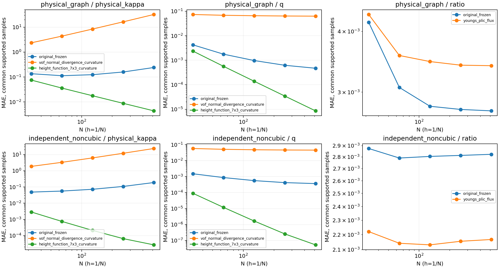

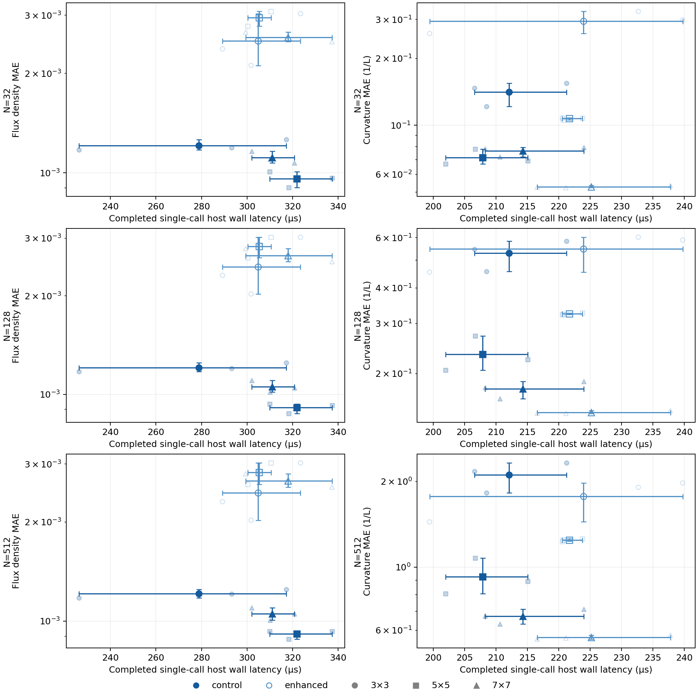

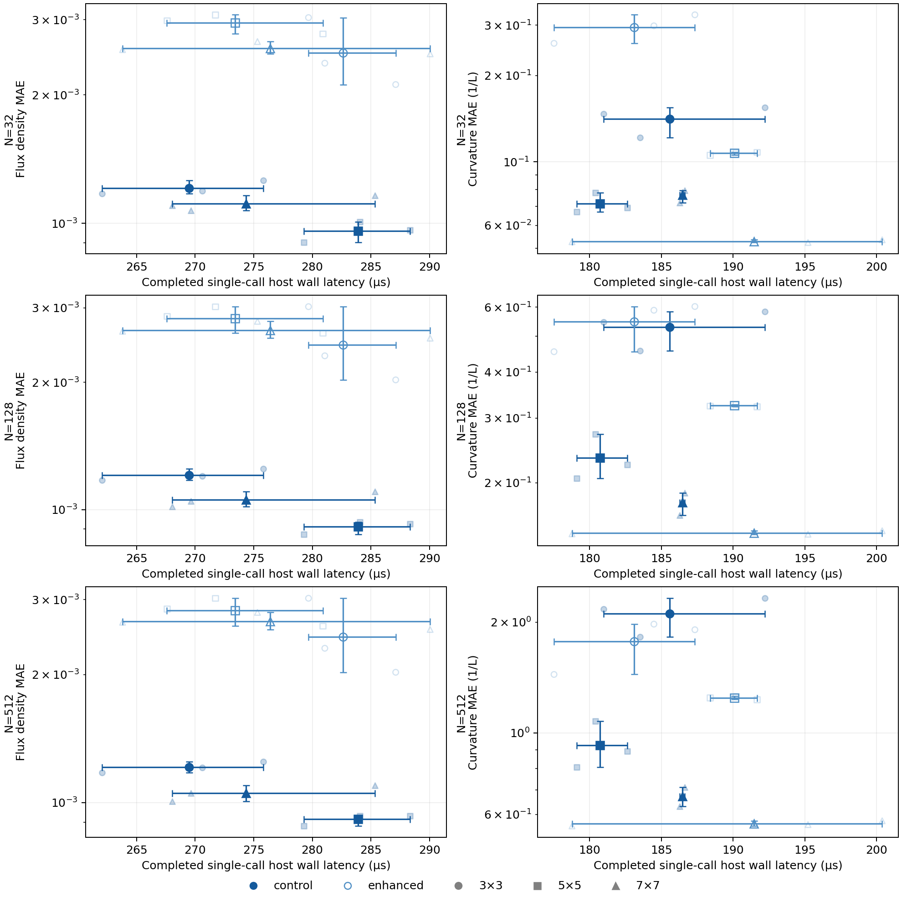

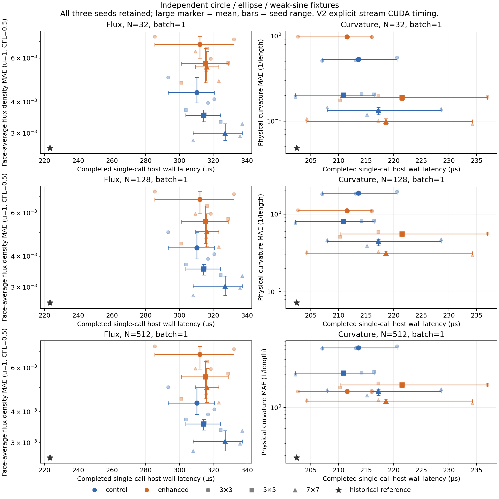

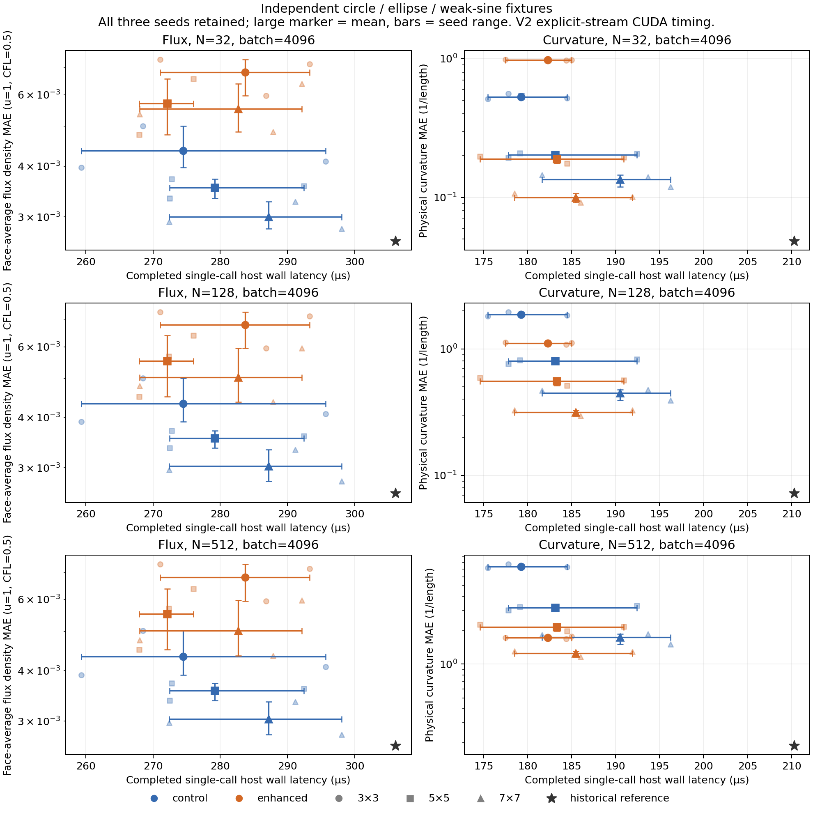


下载与实验设置
共36组：两个算子、两种数据策略、三种邻域、三个配对种子。每种数据策略使用131072个训练样本与16384个验证样本，测试几何单独冻结。所有候选均为独立MLP；通量保留正分箱单调参数化、端点和容量约束，曲率直接由网络输出。
最终精度评测包含36个算子模型、两类几何、31360个物理采样。正式计时覆盖五档批量，最终阶段共180种配置、90000次测量；1500步阶段单独保存。全部种子、退步结果与共同支持覆盖率都在下载表中。
相对新匹配3×3的改进用于判断邻域贡献。历史成熟模型的编码结构、训练过程和部分约束不同，与它的差异另作参考。曲率与通量的算子结果也不直接代表完整流体模拟的误差或耗时。